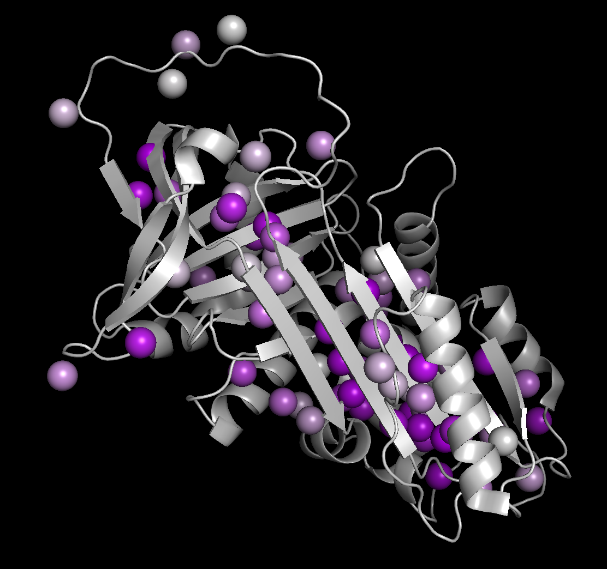

Pymol gradient generator
For colouring residues or atoms by numerical quantities
 This tool generates scripts to project numerical data, such as chemical shift perturbations, relaxation rates or order parameters, onto pdb structures according to the selected colour scale. Users can input data either on a per-residue level (often suited to measurements of amide groups) or according to named atoms. Named atoms will be highlighted with a spheres representation.
Usage: Open your pdb structure in pymol. Paste numerical data into the form below, set minimum/maximum values and select the colour scale. Select 'Generate script and copy' to copy the script to the clipboard, and paste this output into the pymol command window.
Colour schemes
Two-tone colour gradients are generated by linear interpolation in RGB space. Viridis, plasma and magma gradients are generated with D3js. These are designed to be colourblind-friendly and perceptually uniform.
- Viridis: [D3js]
- Plasma: [D3js]
- Magma: [D3js]
- Yellow – Red: [1, 1, 0] – [1, 0, 0]
- Grey – Purple: [0.8, 0.8, 0.8] – [0.7, 0, 0.9]
- Oranges: [1, 0.94, 0.88] – [1, 0.39, 0]
Script generator
Output
Generated script will appear here…